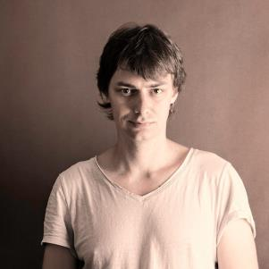
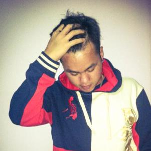
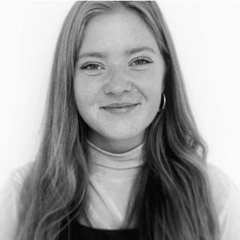
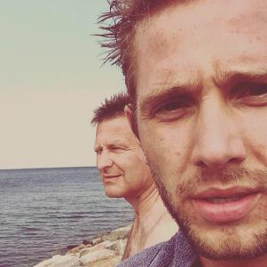
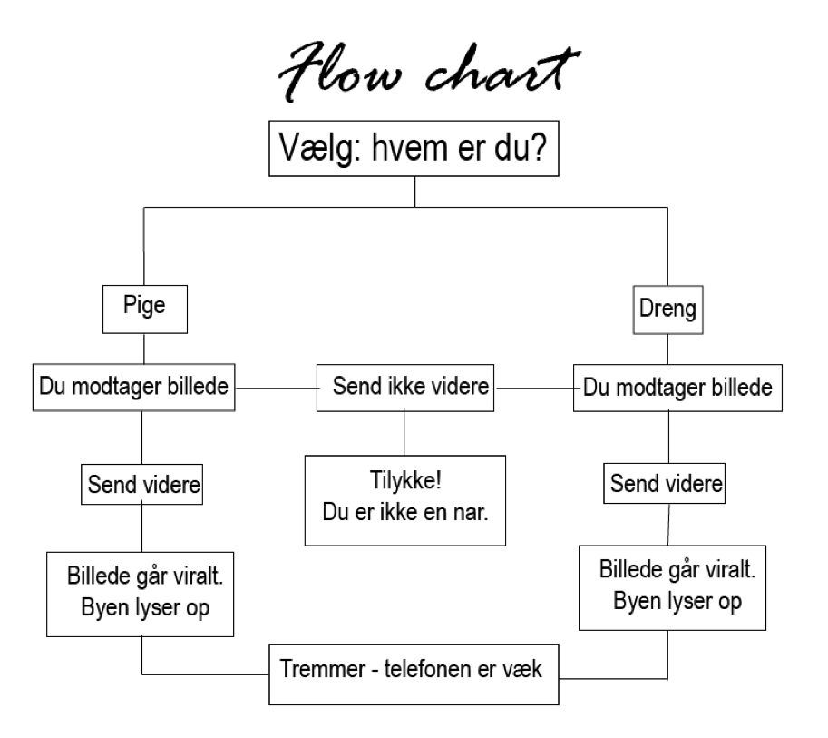

Dokumentationsite
-

Jacob Kristensen
-

Gallie Ursal
-

Mathilde Pedersen
-
Trine Andersen
-

Hugo Dichman
Historie idé og beskrivelse
Vi vil med vores animation vise, at det ikke er i orden at dele/videresende andres private billeder. Vi skriver ikke nødvendigvis direkte, at det faktisk er ulovligt, men vi viser det vha af tremmerne, der kommer ned, når man har videresendt det nøgenbillede, man har modtaget. Deler man derimod ikke billedet, kan det være, at man er heldig at modtage et mere en anden gang. Vi vil signalere, at en god ven respekterer andres privatliv, og at man bliver betroet mere, når folk kan stole på en.
Vi har valgt at man kan vælge mellem at være to forskellige karakterer i vores “spil”. Der er en drengekarakter og en pigekarakter. Uanset hvilken karakter man vælger, vil afsenderen af nøgenbilledet være en dreng, der tilsyneladende stoler på vores karakter. I spillet hedder han på mobilen “ham den flotte”, men dette ved vi først, når vi har valgt ikke at videresende billedet. Brugeren af spillet kender altså ikke karakterernes indbyrdes relation på forhånd, men vi ønsker også at formidle, at man aldrig bør dele/videresende andres private billeder - uanset om de er fra en ven eller en fremmed.
I vores historie præsenteres vi først for et valg: vil du være drengefiguren eller pigefiguren? Efterfølgende ser vi den valgte karakters værelse samt mobil fra vedkommendes synspunkt. Vi modtager en notifikation fra snapchat, og her skal brugeren (den der spiller spillet) klikke på snapchatikonet og åbne billedet. På billedet ses en nøgen dreng/mand og vi præsenteres igen for et valg: skal vi slette billedet eller sender vi det videre?
Scenariet hvor vi sletter billedet: Når bruger trykker slet, vil vores karakter modtage en besked fra “ham den flotte”, hvor han takker for, at han skal stole på vores karakter og antyder, at der kunne være flere nøgenbilleder på vej til vores karakter.
Scenariet hvor vi videresender billedet: Når brugeren vælger at sende billedet videre, starter det en kædereaktion, hvor hele “byen” deler og sender videre - vi ser folks reaktioner i form af beskeder og emojis. Derefter er vi tilbage i den valgte karakters værelse, hvor der nu kommer tremmer ned foran karakteren som i et fængsel, som signalerer, at det valg vi har truffet ikke bare er dårlig stil - det er faktisk også ulovligt.
Flowchart
Målgruppebeskrivelse
Målgruppebeskrivelse:
- Unge
- 13-15 år
- Repræsenteret bredt i etnicitet, seksualitet, dialekt, stil. Etc.
- De er vokset op med digitale medier og produkter.
Hvem er vores målgruppe:
Det er meget usandsynligt, at de nogensinde har ejet en mobiltelefon, der ikke har både kamera og internetadgan. De kan derfor også findes på de sociale medier, hvor især billeddeling er i fokus (instagram, snapchat, facebook. Etc.). Vores målgruppe er sociale eller ønsker at indgå i en social konstruktion, og vil gerne "være med" samt "passe ind". De befinder sig alle i et stadie af livet, hvor der sker mange både fysiske og mentale ændringer i deres kroppe, og de forsøger at finde ud af, hvem de er, og hvad de har at byde på.
Den pubertære folkeskoledreng
Navn: Jonathan
Alder: 15
Bopæl og familieforhold: Bor med sine forældre samt lillesøster i en lejlighed på Østerbro.
Beskæftigelse: Jonathan går i 9. klasse på en folkeskole ikke så langt fra sin lejlighed.
Interesser: Jonathan kan rigtig godt lide at være social og deltager i en masse forskellige aktiviteter. I sin fritid spiller han både fodbold samt går til dans. Han er ok i skolen, men han synes det er både kedeligt og hårdt at skulle sidde så meget stille hele tiden. Han har en del venner, og er vist rimelig populær blandt pigerne. Han kunne godt tænke sig at få et fritids-job, men fordi han dyrker så meget sport, tror han ikke, at han har tid til det.
Den pubertære folkeskolepige
Navn: Kaja
Alder: 14
Bopæl og familieforhold: Bor sammen med sin mor i en lejlighed i Valby. Efter hendes forældre gik fra hinanden har hun ikke set så meget til sin far, som har fået en ny kone.
Beskæftigelse: Kaja går i 8. Klasse på en folkeskole på Østerbro, hvor hun boede inden hendes forældre gik fra hinanden. Selvom hun har lidt langt til skole.
Interesser: Kaja dyrker håndbold i sin fritid, hvilket hun har gjort siden hun var 8. Hun er ikke den bedste på holdet, men hun elsker at bevæge sig og bruge tid med håndbold-veninderne. I skolen er hun rigtig glad for både dansk og engelsk, men hun er også meget dygtig til matematik. Hun er faktisk en af de bedste i klassen. Hun er begyndt at interessere sig en del for drengene i klassen, men ikke nær so meget som de andre piger. Selvom hun er en flot pige, er det som om, drengene synes hun går for meget op i skolen - det skal hun lige finde ud af, hvordan hun skal håndtere.